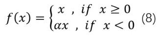
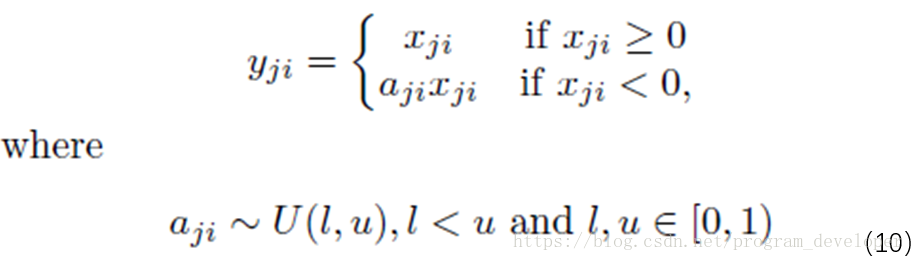
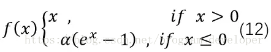

激活函数的概念
神经网络中的每个神经元节点接受上一层神经元的输出值作为本神经元的输入值，并将输入值传递给下一层，输入层神经元节点会将输入属性值直接传递给下一层（隐层或输出层）。在多层神经网络中，上层节点的输出和下层节点的输入之间具有一个函数关系，这个函数称为激活函数（又称激励函数）。
激活函数的作用
不使用激活函数的话，神经网络的每层都只是做线性变换，多层输入叠加后也还是线性变换。因为线性模型的表达能力通常不够，所以这时候就体现了激活函数的作用了，激活函数可以引入非线性因素。
激活函数分类
饱和激活函数和非饱和激活函数

饱和定义
假设 $ h(x) $ 是一个激活函数
- 若 $ \lim_{n\rightarrow+\infty} h^{\prime}(x) = 0 $ 称为右饱和
- 若 $ \lim_{n\rightarrow-\infty} h^{\prime}(x) = 0 $ 称为左饱和
- 当一个函数既满足左饱和又满足右饱称之为饱和函数
饱和激活函数(Saturated)
Sigmoid和tanh是饱和激活函数
非饱和激活函数(Non-Saturated)
ReLU(修正线性单元)及其变体则是“非饱和激活函数
非饱和激活函数优势
- 能解决所谓的“梯度消失”问题。
- 它能加快收敛速度。
常用激活函数
Sigmoid
公式为: $ f(x) = \frac{1}{1 + e^{-x}} $
函数图像:
导函数图像:
特点:- sigmoid函数饱和使梯度消失。我们从导函数图像中可以看出sigmoid的导数都是小于0.25的，那么在进行反向传播的时候，梯度相乘结果会慢慢的趋近于0。这样，几乎就没有梯度信号通过神经元传递到前面层的梯度更新中，因此这时前面层的权值几乎没有更新，这就叫梯度消失。除此之外，为了防止饱和，必须对于权重矩阵的初始化特别留意。如果初始化权重过大，可能很多神经元得到一个比较小的梯度，致使神经元不能很好的更新权重提前饱和，神经网络就几乎不学习。
- sigmoid函数输出不是“零为中心”(zero-centered)。一个多层的sigmoid神经网络，如果你的输入x都是正数，那么在反向传播中w的梯度传播到网络的某一处时，权值的变化是要么全正要么全负。
- 指数函数的计算是比较消耗计算资源的.
tanh
tanh函数跟sigmoid还是很像的，实际上，tanh是sigmoid的变形,公式为: $ tanh(x) = \frac{1-e^{-2x}}{1+e^{-2x}} = 2sigmoid(2x)-1$
函数图像:
优点:- tanh解决了sigmoid的输出非“零为中心”的问题
缺点： - 依然有sigmoid函数过饱和的问题
- 指数函数的计算是比较消耗计算资源的.
- tanh解决了sigmoid的输出非“零为中心”的问题
ReLU修正线性单元
公式为: $ f(x) = max(0, x) $
函数图像:
优点:- ReLU解决了梯度消失的问题，至少x在正区间内，神经元不会饱和
- 由于ReLU线性、非饱和的形式，在SGD中能够快速收敛
- 算速度要快很多。ReLU函数只有线性关系，不需要指数计算，不管在前向传播还是反向传播，计算速度都比sigmoid和tanh快
缺点： - ReLU的输出不是“零为中心”
- 随着训练的进行，可能会出现神经元死亡，权重无法更新的情况。这种神经元的死亡是不可逆转的死亡
Leaky ReLU
Leaky ReLU是给所有负值赋予一个非零的斜率。
公式为: 
函数图像:
优点:
- 神经元不会出现死亡
- 神经元不会饱和
- 在SGD收敛很快
- 计算速度快
缺点: - 参数 $ \alpha $ 需要先验知识,人工赋值
RReLU 随机修正线性单元
公式为: 
函数图像:
特点:- 在训练过程中，α是从一个高斯分布中随机出来的值，然后再在测试过程中进行修正。在测试阶段，把训练过程中所有的取个平均值。
- 数学形式与PReLU类似，但RReLU是一种非确定性激活函数，其参数是随机的
ELU 指数线性单元
它试图将激活函数的输出平均值接近零，从而加快学习速度。同时，它还能通过正值的标识来避免梯度消失的问题。
公式为: 
函数图像为:
优点：
- ELU包含了ReLU的所有优点。
- 神经元不会出现死亡的情况。
- ELU激活函数的输出均值是接近于零的。
缺点: - 指数计算效率低
如何选择激活函数
在实践过程中更多还是需要结合实际情况，考虑不同激活函数的优缺点综合使用。
- 通常来说，不能把各种激活函数串起来在一个网络中使用。
- 如果使用ReLU，那么一定要小心设置学习率(learning rate),并且要注意不要让网络中出现很多死亡神经元。如果死亡神经元过多的问题不好解决，可以试试Leaky ReLU、PReLU、或者Maxout。
- 尽量不要使用sigmoid激活函数，可以试试tanh，不过感觉tanh的效果会比不上ReLU和Maxout。